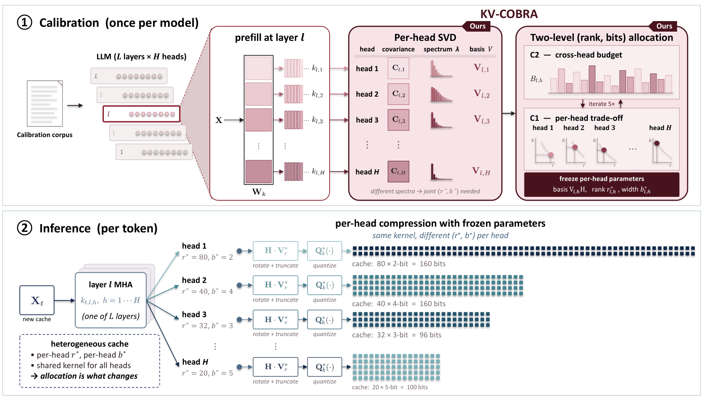

Why it matters왜 중요한가
At long context the KV cache, not the weights, sets the memory and bandwidth bill — and at extreme compression the question is no longer "which quantizer" but "where do the bits go".
긴 컨텍스트에서는 가중치가 아니라 KV 캐시가 메모리와 대역폭 비용을 정한다. 그리고 극단적 압축에서 물음은 더 이상 "어떤 양자화기냐"가 아니라 "비트를 어디에 쓰냐"다.
Heads differ wildly. Some put almost all key energy in a handful of SVD directions; others spread it out. Under a uniform 2 bpd (bits per dimension — average storage bits per cached number) budget on LLaMA-3.1-8B, per-head distortion spans about 100× across the 256 KV heads (the figure annotates 123× max/min). A single global rank is wasteful for the concentrated heads and too small for the diffuse ones. KV-COBRA's claim is blunt: the bottleneck of low-bit KV compression is allocation across heads, not the kernel. That is directly relevant to the archive's low-rank KV thread (STAR-KV, JoLT, PuzzleKV), which mostly tunes rank alone.
헤드들은 서로 크게 다르다. 어떤 헤드는 키 에너지를 SVD 방향 몇 개에 거의 다 몰아 두고, 어떤 헤드는 넓게 퍼뜨린다. LLaMA-3.1-8B에 균일 2 bpd(차원당 비트 — 캐시에 저장되는 숫자 하나당 평균 비트) 예산을 걸면, 헤드별 왜곡이 256개 KV 헤드에서 약 100배 벌어진다(그림에는 최대/최소 123배로 표시). 전역 랭크 하나는 집중형 헤드엔 낭비이고 분산형 헤드엔 모자란다. KV-COBRA의 주장은 단호하다: 저비트 KV 압축의 병목은 커널이 아니라 헤드 간 배분이다. 이는 랭크만 주로 조정해 온 아카이브의 저랭크 KV 흐름(STAR-KV, JoLT, PuzzleKV)과 직접 맞닿는다.

By the numbers핵심 숫자
At 1 bpd, how close to FP16?1 bpd에서 FP16에 얼마나 가까운가?
| Model | PPL ↓ | Zero-shot ↑ | LongBench F1 ↑ |
|---|---|---|---|
| LLaMA-3.1-8B | 20.26 ± 0.87 / 7.67 | 51.6 ± 0.7 / 55.4 | 11.36 ± 0.77 / 15.80 |
| Mistral-7B-v0.3 | 15.90 ± 0.13 / 13.15 | 55.1 ± 0.5 / 56.3 | 10.72 ± 0.49 / 11.54 |
| Qwen2.5-7B-Instruct | 13.20 ± 0.06 / 9.50 | 52.5 ± 0.7 / 54.1 | 9.53 ± 0.30 / 10.64 |
In one diagram한 장의 그림
The idea in three pieces아이디어를 셋으로 쪼개면
Rank and bits are coupled랭크와 비트는 묶여 있다
The best rank for a head depends on its bit-width and vice versa, so tuning one with the other held fixed cannot reach the joint optimum. C1 solves the inner trade-off by an O(d/2) enumeration; C2 solves the outer allocation with first-order conditions from rate-distortion theory. At 2 bpd the chosen ranks span roughly 16–100 and bit-widths 2–5 across heads.
헤드의 최적 랭크는 비트 폭에 달려 있고 그 반대도 마찬가지다. 그래서 하나를 고정하고 다른 하나만 조정하면 공동 최적에 닿지 못한다. C1은 안쪽 맞바꿈을 O(d/2) 열거로 풀고, C2는 rate-distortion 이론의 1차 조건으로 바깥 배분을 푼다. 2 bpd에서 고른 랭크는 헤드마다 대략 16–100, 비트 폭은 2–5에 걸친다.
Flatten variance for free분산을 공짜로 평평하게
Retained SVD coordinates have variances spread over about 10³×, which would need a separate step-size per channel. A fused Walsh–Hadamard rotation (with a fixed random sign flip) collapses that to O(1) and pushes each channel toward Gaussian — the regime where Bennett's 2−2b/12 error model, which the whole solver relies on, is accurate.
남긴 SVD 좌표의 분산은 약 10³배에 걸쳐 퍼져 있어서, 채널마다 따로 스텝 크기를 둬야 한다. 합쳐 넣은 Walsh–Hadamard 회전(고정된 랜덤 부호 뒤집기 포함)이 이를 O(1)로 줄이고 각 채널을 가우시안 쪽으로 민다. 이 영역에서야 솔버 전체가 기대는 Bennett의 2−2b/12 오차 모델이 정확하다.
Rank directions by what the query sees쿼리가 보는 만큼 방향 순위를 매긴다
A second-order bound on the KL divergence between clean and compressed attention gives a per-direction weight σ²Q,iσ²K,i. A direction with small key variance but large query variance would be cut by plain SVD truncation even though attention relies on it; reordering the basis by this weight before C1/C2 fixes that. This KL version wins on LongBench; the MSE version tends to win on perplexity.
깨끗한 어텐션과 압축된 어텐션 사이 KL 발산의 2차 상한에서 방향별 가중치 σ²Q,iσ²K,i가 나온다. 키 분산은 작지만 쿼리 분산이 큰 방향은, 어텐션이 거기에 기대는데도 일반 SVD 절단에선 잘려 나간다. C1/C2 전에 이 가중치로 기저 순서를 다시 매기면 이 문제가 해결된다. KL 버전은 LongBench에서, MSE 버전은 perplexity에서 대체로 이긴다.
How it works어떻게 작동하나
- Calibrate once.한 번만 보정한다. Run 32 Wikitext-2 samples, collect each head's pre-RoPE key covariance (eigenvalues and SVD basis) and query variance in that basis. Wikitext-2 샘플 32개를 돌려, 헤드마다 RoPE 적용 전 키 공분산(고유값과 SVD 기저)과 그 기저에서의 쿼리 분산을 모은다.
- Reorder and allocate.순서를 다시 매기고 배분한다. Sort directions by w = σ²Q·λ, start every head at bpd·d bits, and alternate C1 (pick r*, b*) and C2 (move budget) for 5 rounds. 방향을 w = σ²Q·λ로 정렬하고, 모든 헤드를 bpd·d 비트에서 시작해 C1(r*, b* 선택)과 C2(예산 이동)를 5라운드 번갈아 돈다.
- Fuse and store.합치고 저장한다. Fold the Hadamard rotation into the truncated basis and keep (basis, r*, b*) per head. Hadamard 회전을 잘린 기저에 접어 넣고, 헤드마다 (기저, r*, b*)를 저장한다.
- Compress each token.토큰마다 압축한다. One matrix–vector multiply projects and rotates the key; quantize at b* bits; dequantize when attention reads it. Primitive-level attention runs 1.79–1.89× faster than FP16 SDPA at r = 16 (appendix). 행렬–벡터 곱 한 번으로 키를 투영·회전하고 b* 비트로 양자화하며, 어텐션이 읽을 때 역양자화한다. 부록에 따르면 r = 16에서 어텐션 연산 단위로 FP16 SDPA보다 1.79–1.89배 빠르다.
What to take away그래서, 가져갈 것
At ≥ 2 bpd the allocator barely matters; below 1 bpd it decides everything. If you work on low-rank KV compression, report results under 1 bpd or you may not see your method's real ranking.
2 bpd 이상에선 배분기가 거의 상관없고, 1 bpd 아래에선 모든 걸 좌우한다. 저랭크 KV 압축을 한다면 1 bpd 아래 결과를 보고해야 방법의 진짜 순위가 보인다.
The surrogate matters more than the solver: an exact DP solver lowered modeled distortion 12–16% yet worsened PPL by ~0.5. The error model is the weak link, which is why switching the objective to attention-KL helps where more MSE optimization cannot.
솔버보다 대리 목표(surrogate)가 더 중요하다. 정확한 DP 솔버는 모델링된 왜곡을 12–16% 낮췄지만 PPL은 약 0.5 나빠졌다. 약한 고리는 오차 모델이고, 그래서 MSE를 더 최적화하는 것보다 목표를 attention-KL로 바꾸는 게 효과가 있다.
In joint K+V compression, V-heavy splits win, and V at 2 bpd collapses on LLaMA and Mistral (PPL > 150). Values need more bits than keys because their spectrum is flatter — a useful prior for any KV budget split.
K+V 공동 압축에서는 V에 비트를 더 주는 분할이 이기고, V를 2 bpd로 두면 LLaMA와 Mistral에서 무너진다(PPL > 150). 값(V)은 스펙트럼이 더 평평해서 키보다 비트가 더 필요하다. 어떤 KV 예산 분할에도 쓸 만한 사전 지식이다.